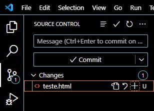

como dar Upload em um arquivo para o GitHub direto do VSCode
1° passo- crie um repositório no GitHub. 2° passo- crie uma pasta na área de trabalho do seu computador. 3° passo- abra o vscode.
4° passo- clique em “Clone Git Repository” para clonar o repositório do Github.
5° passo- aparecerá uma caixa de mensagem acima, selecione "Clone from Github"
6º passo- aparecerá uma mensagem de permissão para o vscode abrir o github, permita.

7º passo- você será direcionado para uma página aonde deve autorizar o vscode a se vincular ao github
8º passo- no vscode abrirá um menu com os repositórios existentes em seu github, selecione o repositório desejado
9º passo- abra no vscode a pasta criada no passo 2
10° passo- crie um arquivo na pasta existente, clicando no desenho selecionado abaixo
11º passo- clique em source control, e veja que o arquivo criado apareceu lá também
12º passo- este “U” ao lado direito do arquivo significa que ele ainda não está vinculado ao github, para vinculá-lo basta clicar no “+” 13º passo- logo após clique na seta para baixo que há ao lado do “Commit” e selecione “Commit & Push”
14º passo- feito isso, basta entrar no repositório no github e ver que o arquivo criado no vscode já está no github